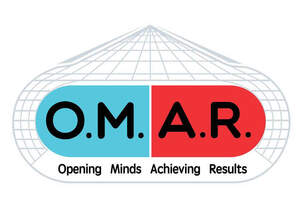
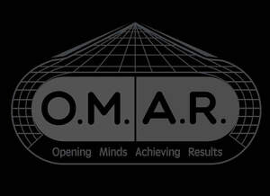

Trade Mark Journal No.2026/008 20 February 2026
UK00004322202 11 January 2026 (16,35,41)
Mark 1

Mark 2

- Class 16
- Digital printing paper; Advertising publications; Printed publications; Publications (Printed -); Printed periodical publications; Educational publications; Promotional publications; Annuals [printed publications]; Periodical publications; Printed publications relating to computers.
- Class 35
- Online marketing; Online advertising services; Online advertising; Advertising the goods and services of online vendors via a searchable online guide; Online business networking services; Providing a searchable online advertising guide featuring the goods and services of online vendors; Providing a searchable online advertising guide featuring the goods and services of other on-line vendors on the internet; Providing searchable online advertising guides; Online retail services relating to clothing; Digital marketing; Digital advertising services; Advertising in periodicals, brochures and newspapers; Publication of publicity materials on-line; Consultancy regarding business organisation and business economics; Business research services; Business research; Business marketing services; Business planning and business continuity consulting; Business planning services for enterprises; Business administration consultancy; Business management services; Business studies; Business promotion services; Business strategy development services; Business strategy services; Business administration; Business consultancy; Business consulting; Business marketing consulting services; Business consulting for enterprises; Business consulting services; Business networking services; Business planning services; Business management services relating to the development of businesses; Business management; Professional business consultancy services; Business management and enterprise organization consultancy; Business consultancy services; Advisory services relating to business management and business operations; Business organization consultancy; Business consultancy (Professional -); Professional business consultancy; Business management and organization consultancy services; Business marketing consultancy; Business management assistance in the field of franchising; Consulting services in business organization and management; Business marketing consultation services; Business organization consulting; Business networking; Business management and consulting services; Business management consulting services; Business promotion; Business services relating to the establishment of businesses; Business organisation consulting; Online advertisements; On-line advertising; Business information services provided online from a computer database or the internet; Promotion, advertising and marketing of on-line websites; Arranging subscriptions to multimedia content for others; Online advertising network matching services for connecting advertisers to websites; Business information services provided online from a global computer network or the internet.
- Class 41
- Education, teaching and training; Training and education services; Education and training services; Residential education courses; Online education services; Education services relating to health; Education and training in the field of business management; Multimedia publishing of electronic publications; Publishing of electronic publications; Electronic online publication of periodicals and books; Publication of electronic magazines; Online publication of electronic books and journals; Publication of electronic books and journals online; Online electronic publishing of books and periodicals; Online digital publishing services; Online publication of electronic newspapers; Non-downloadable electronic publications; Publishing of electronic books and journals online; Multimedia publishing of magazines, journals and newspapers; Publication of electronic books and journals on-line; On-line publication of electronic books and journals; On-line publication of electronic books and journals (non-downloadable); Publishing of electronic books and journals on-line; Multimedia publishing of magazines; Publication of electronic books and periodicals on the Internet; Providing online electronic publications; Publication of periodicals and books in electronic form; Publishing services for periodical and non-periodical publications, other than publicity texts; Multimedia publishing of journals; Publishing of medical publications; On-line publication of electronic books and journals [not downloadable]; Electronic publications (not downloadable); Providing electronic publications; Multimedia publishing of newspapers; Providing on-line electronic publications; Provision of on-line electronic publications; Publication of texts in the form of electronic media; Publication of newspapers, periodicals, catalogs and brochures; Electronic publication; Electronic publication services; Services for the publication of magazines; Multimedia publishing of books; Publication of consumer magazines; Providing online electronic publications, not downloadable, in the field of music; Providing online electronic publications in the field of music, not downloadable; Publication of multimedia material online; Publication of books, magazines, almanacs and journals; Online publications, namely blogs; Publication of magazines; Digital video, audio and multimedia entertainment publishing services; Publishing services for books and magazines; Publishing of magazines in electronic form on the Internet; Providing online electronic publications, not downloadable; Providing on-line electronic publications [non-downloadable]; Electronic publishing; Providing non-downloadable electronic publications; Rental of printed publications; Publishing of web magazines; Publication of periodicals; Publishing of books, magazines; Publication of audio books; Provision of non-downloadable electronic publications; Providing on-line electronic publications, not downloadable; Publication of electronic newspapers accessible via a global computer network; Provision of on-line electronic publications (not downloadable); Lending of books and other publications; Providing electronic publications [not downloadable]; Services for the publication of books; Electronic publishing services; Providing non-downloadable electronic publications from a global computer network or the Internet; Publication of journals; Providing electronic publications from a global computer network or the Internet, not downloadable; Publication of printed matter and printed publications; Publication of educational books; Business educational services; Education services relating to business training; Education and training services in relation to business management; Education services relating to business franchise management; Consultation services relating to business education; Business training; Conducting of educational courses in business; Business training services; Educational services relating to business; Business mentoring services; Business training consultancy services; Training or education services in the field of life coaching; Training courses; Written training courses; Providing courses of training; Personal development courses; Providing on-line non-downloadable video content; Providing on-line non-downloadable audio content; Providing online videos, not downloadable; Providing online publications, not downloadable; Providing online images, not downloadable; Publication of the editorial content of sites accessible via a global computer network; Online interactive entertainment; Creation [writing] of educational content for podcasts; Providing online comic books, not downloadable; Provision of online tutorials; Online entertainment services; Publication of online reviews in the field of entertainment; Provision of online information relating to audio and visual media.
Omar Simms